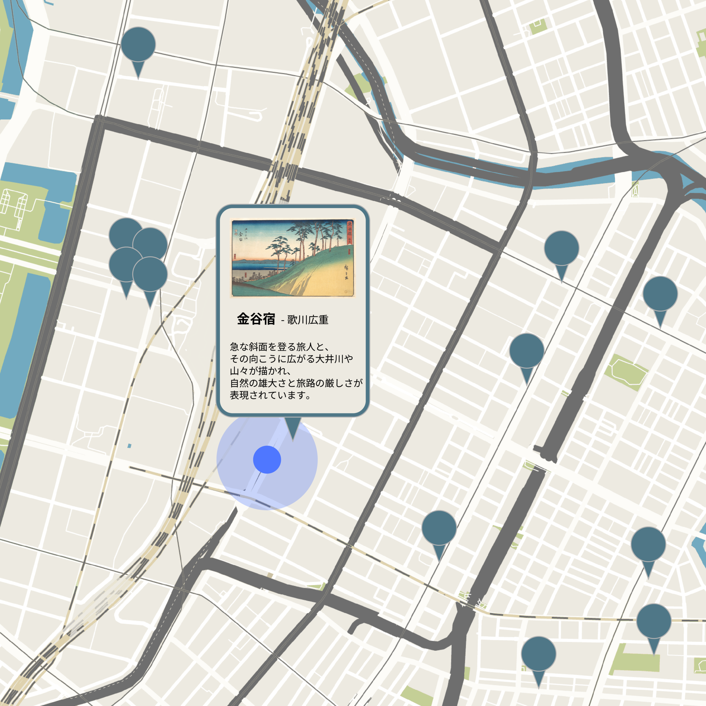
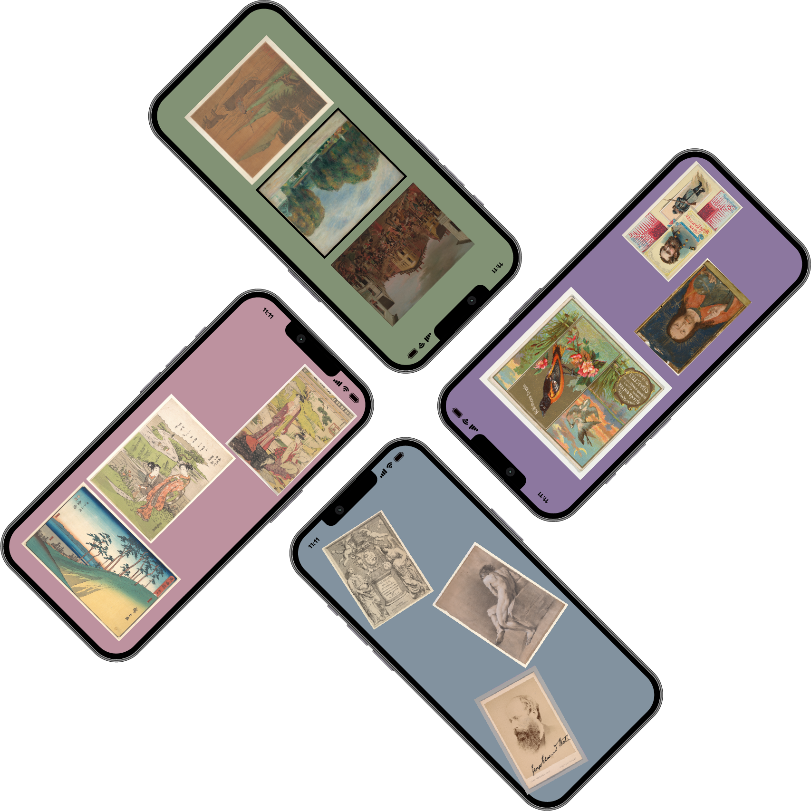

About

アートは美術館の中だけにあるものではありません。いつも通る道、駅の壁、公園。あらゆる場所にアートは存在し、時に時代を超えて重なり続けています。
Gallery of Streetは形式やジャンル、時代にとらわれずにアートと触れ合うことができます。
Gallery of Streetは既存のアートだけでなく、街中で見つけた表現を位置情報とともに投稿・閲覧できます。
投稿された作品は、世界中のユーザーと共有され、コメントやタグでつながっていきます。
ただの鑑賞ではなく、あなた自身が「記録者」「キュレーター」になることができます。


自分だけのコレクションや、お気に入りのエリアをつくることもできます。
鑑賞する、記録する、語り合う——
どの形でも、あなたなりの関わり方であなただけのギャラリーを育てていくことができます。